Can someone make the same thing from your receipt?
With the receipt and a picture of what it made, yes: in our test, every time, 15 of 15. The receipt alone did it 10 times, and a picture alone 9.
The test
We picked five prompts at random from the gallery, each run once with Claude Code. For each, we made 3 new runs three ways, on the same model in an empty folder with nothing of ours set up:
- Receipt + picture: the prompt from the receipt, and a picture of the original with "look.png is a picture of what this should look like."
- Receipt only: the prompt from the receipt.
- Picture only: "Make this. Match the picture in look.png as closely as you can."
Every output was then judged against the original: is this the same thing, the one you'd accept if you had asked for the original? The judge didn't know which way a run was made.
| Made the same thing | runs |
|---|---|
| Receipt + picture | 15 of 15 |
| Receipt only | 10 of 15 |
| Picture only | 9 of 15 |
Every run
Green: judged the same thing as the original. Red: not.
ASMR toys: wax, soap, slime, bubble wrap · Sonnet 5.5
ASMR reactive interactive toys: a slab of hardened candle wax I can press until it cracks and crumbles, a bar of dried soap I can crunch and carve, slime I can poke, stretch and squish, and bubble wrap I can pop, each with satisfying sounds.
Two of the receipt-only runs show nothing: their pages stop with an error as they load.
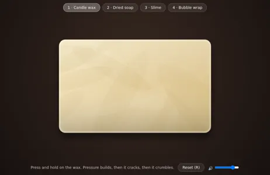
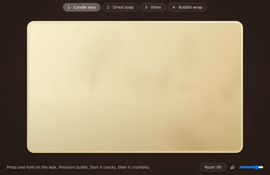
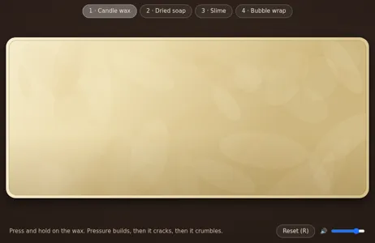
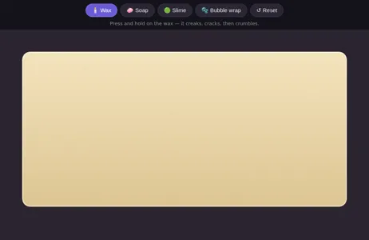
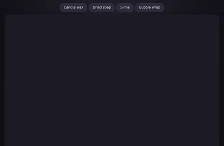
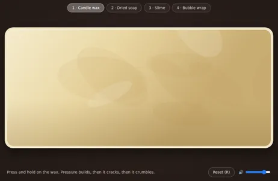
Animated ASCII fog · Sonnet 5.5
An animated colour ASCII background of drifting fog for my portfolio site.
The fog barely shows in a still picture, the original's included, so these were judged from the code: does it draw the fog?
3D park trees · Opus 5.5
3D tree models for my park scene: a weeping willow, a silver birch, a gnarled old olive, a cherry in blossom and a young oak.
The prompt asks for 3D model files. Every run's models are shown in one viewer we made, the original's too.
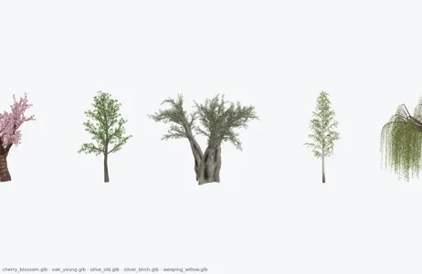
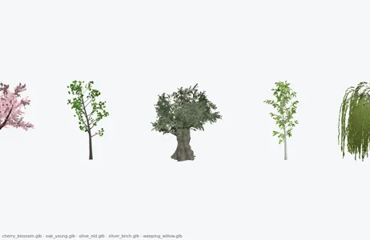
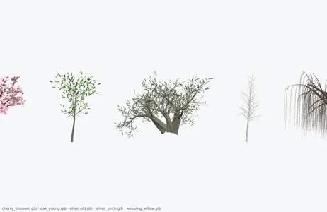
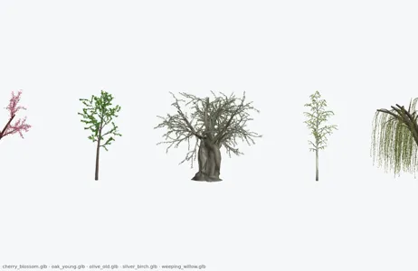
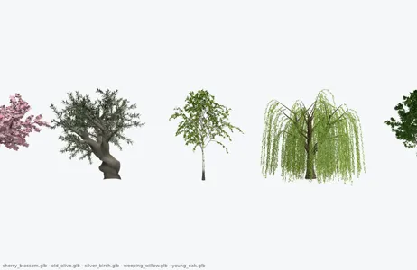
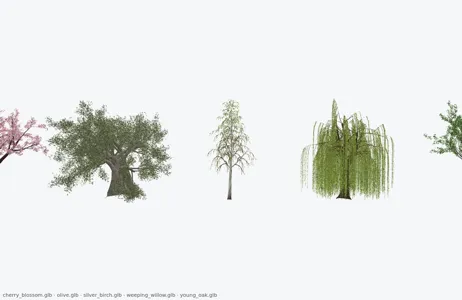
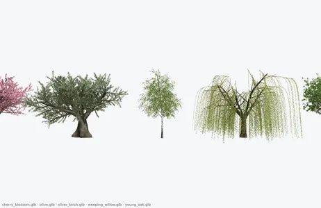
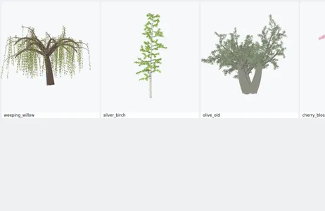
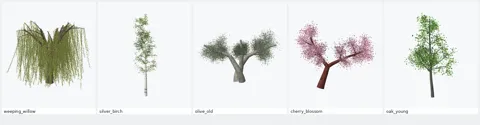
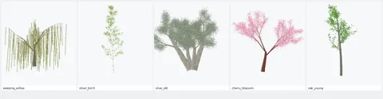
Pokeable blob mascot · Sonnet 5.5
A mascot for my habit-tracker app: a round blob that breathes, blinks and giggles when you poke it. I'd like it in four moods: idle, happy, sleepy and surprised.
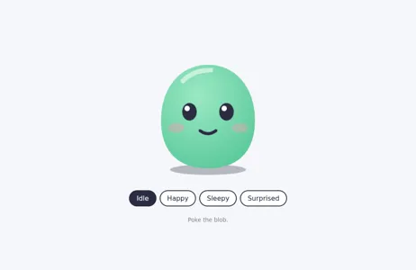
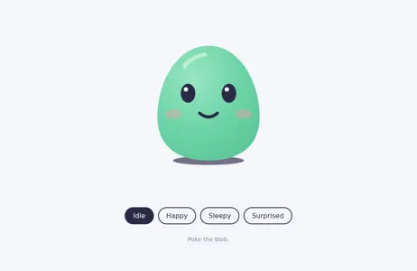
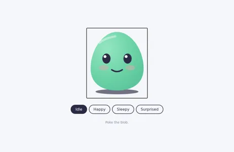
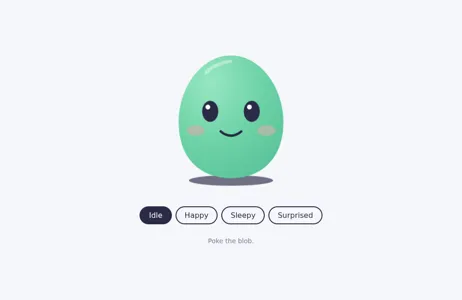
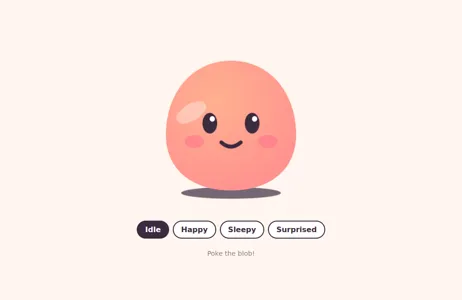
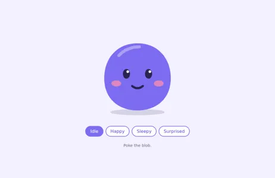
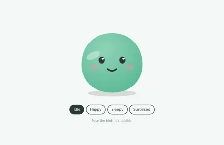
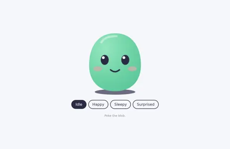
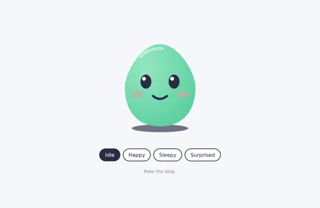
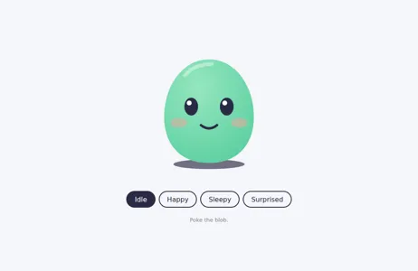
PETSCII meetup screens · Haiku 5.5
Three PETSCII screens of generative patterns for our retro computing meetup's video: an intro, a break card and an outro.
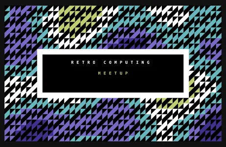
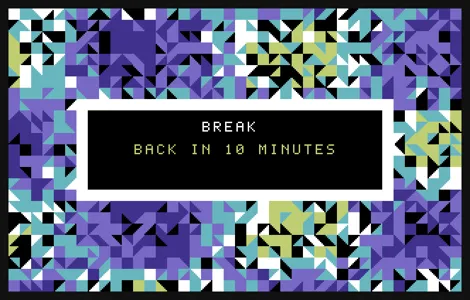
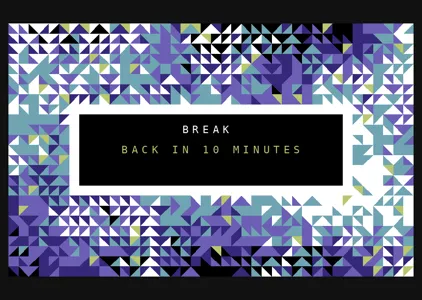
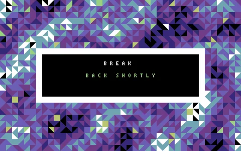
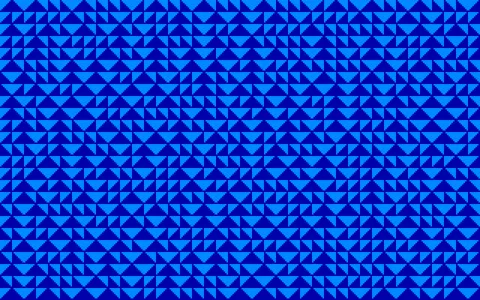
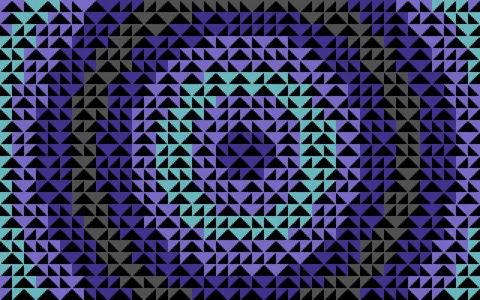
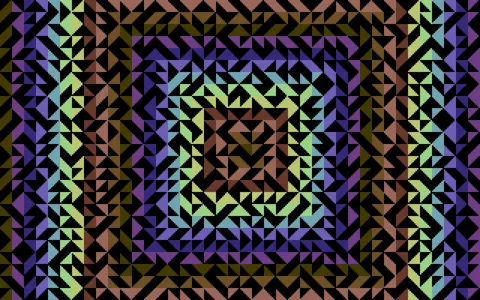
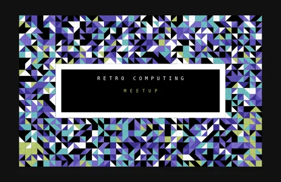
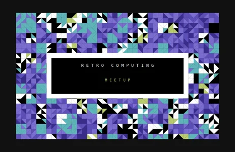
What each half misses
A picture can't show what isn't in it. The fog barely shows in a still, so runs that only had the picture made a dark page with a name on it. The trees were 3D model files; from a picture, runs drew pictures of trees.
A prompt leaves the look open. The ASMR toys and the PETSCII screens came out as different designs from the receipt alone. The PETSCII original was a web page; all three reruns of its receipt made PNG pictures instead.
Together each covers the other, and every run made the same thing.
Try it
receipt.py 7.13 takes a picture when it replays a receipt. This is a three-prompt pixel-art aquarium's receipt (open it); save its picture and run:

uvx --from prompt-receipts receipt --replay 'receipt link' --picture aquarium.png
uvx --from prompt-receipts receipt --replay 'https://musharna.github.io/prompt-receipts/r/#r1.vVbNbuM2EL7rKeYQIDZqKZIcO3F2L7tpD0VjbFD0BSiJsghLpEpS8eZJ-ii9ty_WbygntpMA3RZpfUhEit_8fPPNUD_LUqre08NVkmX0x-9024qhknRr8CdPsiRfLXk7m9OX0lOe5ssZrW7mOd2v6Yfvf-F32iR0WeQiLrNcRh2QLeFXBkux6QcXL-IFn5R1baynTlZq6CKvOskHKUupU5omI3Rn7FbpDa14c8qwOfXWdL13VOM_4FFpnA_Qsyy5ymlyFPW5I7PT5I0XLQlPn-5_BFyV0n0g30hqlZaOCtmaHYmqoqHHWVJ-GtHT70XkhxdESveDp1e_y5T-_I3OLpM0vVhj_fEsTdLsGFiKEs6tFNXR5uoq2wZgmuQjkB-z1WvgziovaZJRMw27y_kIvH7yyMBFegw0g38d62LvME8PwCxJ80h-9VY4LH2jdOB_EYoC-ndCed4wGvF7q0Dfx4xcNLIKCFPcKlRkv9NLC2zbKsN12ErtaHJ2sZ7OxvrdIZW7uzWli2y5lDn09KytqGAYfNFafKW-FfqGBNUt6lhLOYPUPJWNsBtZBS92gGwezWBJlKUZtIe_SjxOo71bLhghvzVNAteBzCqICvQwGxHLLVAzzwA2Lc60reOgXCNbLE3XCV25wIQsKOWHUUTfLRdXFOehbzKqhWoRFsOjGo8uSJv4MZTPS03GErTvcWySNL5rQyTLy8VocEb5gn76zHsi-OrFRkZW9i1zjjbYP84om6X5FXdK5SKIODacq9uCPAeONJRiau5Z8YCgRNHK4Gh9e394myIzrWXp93z07bBReg_H2g0FvGs0XRo1xmxDOuFlazbgP-pkZ-zjYVNU2HTSs1bQYI-9cO5e2k45ByG4yA9W7zl5niDwc_kkMwh4uRrb_bgO-Rt1GFk9Fjt9ol59lW0sMF_Er4OwmDBcfG75wpqdk5al5IXe0k75hhyMzcgZzCDWmYcr7MCwa04Mu53qOpaksBBYldAXZMu1CzEkh7N5SGu5T2t-lNZiVMjyX-WFEeUbKyWhKXEKleMQORfXwRIkJfRGYmZh6vEbpIFiIN6iHSRJDFTfCH9ic6c2G9Yn-l35kOA-eUH9UNfSsp0AC2vHM3LXQL7oNDhS5Ra45MTk56Eo2KRVTo5dDq4x7dxgEVsjMRxAh0C2Vkt7hJ0H1lZvsZYHSvIT1hbfzpogTIILrTYNZsZjiS4UBTe9YB-Dl4GlmyCQnfAYJhuDBCqBcRCoQ_YBPDuxDLTBWHMNJMUGH-TBwkgiLwOBjq-YCmVJ9vFghFVUDN4bfXNiFANuC9811_PUBGrD1xM2uiPS-P3YTocbjPfCtRiCitTTPbO6rgu5WhXiWi5pMl6kMA7NWIxrjXvPSh6jz_cexT2dv2c7_V0LnVMcj1f_y0-GOD75YsC6fx4oAfLGmHlxi3M2cYmE3qeP3ql3_mm__G8UvVvTvFujfGNz_EcMTdibE6zq_Scoh_B0y33A3YcFgsXF7mUHw8KHCgqNT0w-xz0RPlueDY3fZdO_AA' --picture aquarium.png
That shows the commands and stops. Add --run to run them in a new empty folder with the picture in it; you get the new run's own receipt at the end. It runs Claude Code on your machine with the permission setting the original used, which lets it act without asking.
What this doesn't show
It's five prompts, three runs each, on one machine. The judge was Claude, looking at a screenshot of each output (and at the code for the fog), not a person trying each one. Nobody outside has tried it yet. An earlier test with an aquarium only showed that later prompts matter, not that a receipt beats other ways of passing a thing on; this one replaced it.